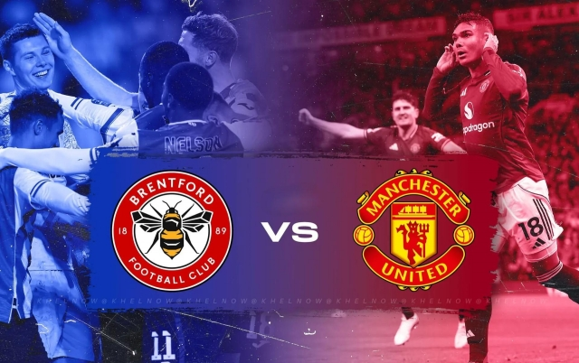
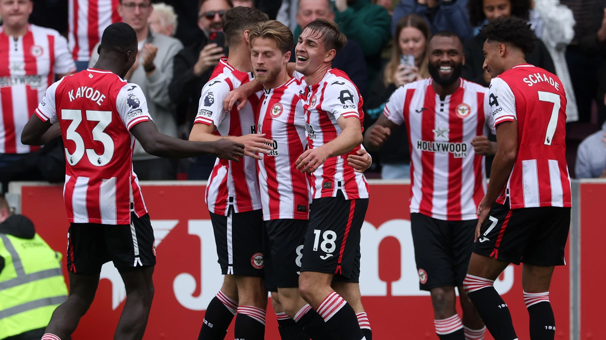
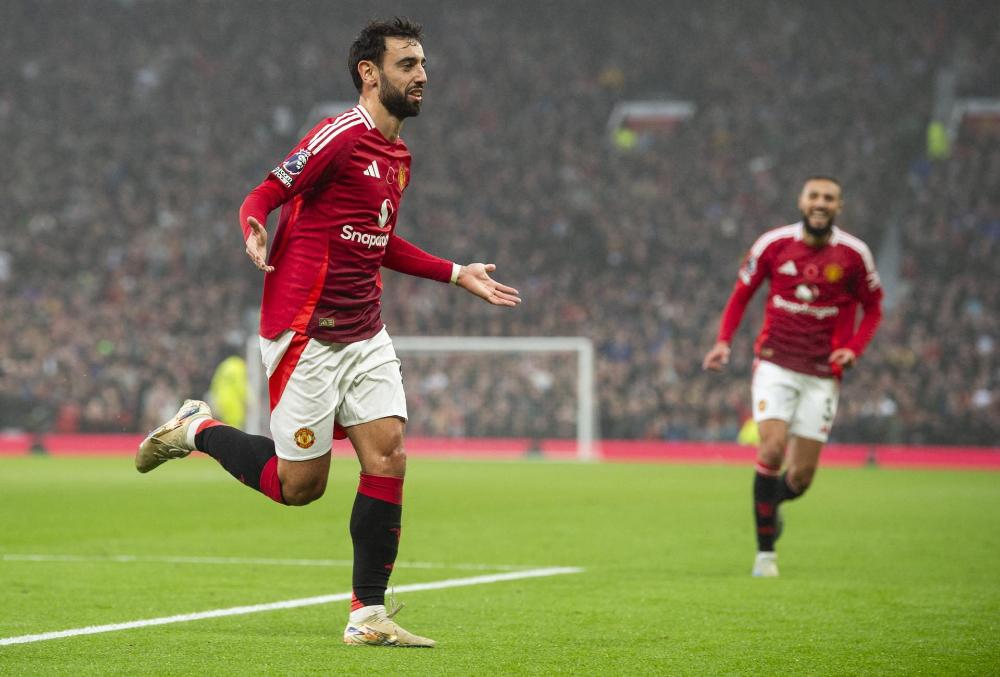

Manchester United vs Brentford: Nhận định chi tiết, Quỷ đỏ buộc phải thắng
Manchester United đối đầu Brentford trong trận đấu mang tính bước ngoặt. Với phong độ thiếu ổn định, Quỷ đỏ buộc phải giành 3 điểm để giữ hy vọng cạnh tranh top đầu.
Xem thêm: Tin bóng đá mới nhất
Tổng quan trận đấu Manchester United vs Brentford
Trận đấu giữa Manchester United vs Brentford luôn mang đến sự khó lường. Trong những mùa giải gần đây, Brentford đã chứng minh họ không còn là “kèo dưới” mà hoàn toàn có thể gây khó khăn cho các ông lớn.
Về phía MU, đội bóng này vẫn chưa tìm được sự ổn định. Những trận thắng xen lẫn thất bại khiến họ gặp khó trong cuộc đua top 4.

Trận đấu được dự đoán căng thẳng và nhiều bàn thắng
Phong độ Manchester United: Vấn đề chưa có lời giải
Manchester United đang trải qua giai đoạn thi đấu thiếu ổn định. Hàng công phụ thuộc nhiều vào cá nhân, trong khi hàng thủ liên tục mắc sai lầm.
Đặc biệt, khả năng chuyển đổi cơ hội thành bàn thắng đang là điểm yếu lớn. Dù tạo ra nhiều cơ hội, nhưng hiệu suất ghi bàn của MU lại không cao.
Điểm mạnh
- Chất lượng đội hình cao
- Lợi thế sân nhà
- Kinh nghiệm thi đấu
Điểm yếu
- Hàng thủ thiếu chắc chắn
- Phong độ không ổn định
- Phụ thuộc cá nhân
Brentford – Đội bóng không dễ bị đánh bại
Brentford nổi tiếng với lối chơi kỷ luật và khoa học. Họ không kiểm soát bóng nhiều nhưng cực kỳ nguy hiểm trong các pha phản công.
Trước các đội bóng lớn, Brentford thường chơi phòng ngự chặt và chờ cơ hội phản công nhanh. Đây chính là điều khiến MU phải đặc biệt cảnh giác.

Brentford luôn gây khó khăn cho các ông lớn
Đội hình dự kiến
- Thủ môn: Senne Lammens
- Hậu vệ: Diogo Dalot, Harry Maguire (hoặc Noussair Mazraoui), Ayden Heaven, Luke Shaw
- Tiền vệ trung tâm: Casemiro, Kobbie Mainoo
- Tiền vệ tấn công: Bryan Mbeumo, Bruno Fernandes, Matheus Cunha
- Tiền đạo: Benjamin Šeško
Tình hình lực lượng: Manchester United thiếu vắng Lisandro Martínez do án treo giò, trong khi Matthijs de Ligt và Patrick Dorgu đang gặp chấn thương. Khả năng ra sân của Leny Yoro vẫn còn bỏ ngỏ.
Brentford
- Thủ môn: Caoimhín Kelleher
- Hậu vệ: Michael Kayode, Sepp van den Berg, Nathan Collins, Keane Lewis-Potter
- Tiền vệ trung tâm: Yehor Yarmoliuk, Mathias Jensen
- Tiền vệ tấn công: Dango Ouattara, Mikkel Damsgaard, Kevin Schade
- Tiền đạo: Igor Thiago
Điểm nóng chiến thuật trận MU vs Brentford
Trận đấu sẽ xoay quanh khu vực trung tuyến. Nếu MU kiểm soát bóng tốt, họ sẽ có lợi thế lớn.
Tuy nhiên, Brentford lại cực kỳ nguy hiểm khi phản công nhanh. Những pha mất bóng ở giữa sân có thể khiến MU trả giá.
- MU cần kiểm soát bóng tốt
- Brentford tận dụng phản công
- Bóng chết có thể quyết định trận đấu
Ngôi sao đáng chú ý
Manchester United
- Bruno Fernandes – Nhạc trưởng nơi tuyến giữa, người điều phối lối chơi và tạo ra khác biệt bằng những đường chuyền quyết định.
- Bryan Mbeumo – Tân binh tốc độ, khả năng đột phá tốt và đang dần trở thành mũi tấn công chủ lực của Quỷ đỏ.
- Kobbie Mainoo – Tiền vệ trẻ đầy tiềm năng, nổi bật với khả năng kiểm soát bóng và thoát pressing.
Brentford
- Igor Thiago – Trung phong mới với khả năng dứt điểm đa dạng, là mũi nhọn nguy hiểm trong vòng cấm.
- Mikkel Damsgaard – Nhạc trưởng sáng tạo, có thể tạo đột biến bằng kỹ thuật và những đường chuyền sắc bén.
- Kevin Schade – Cầu thủ chạy cánh tốc độ, luôn là mối đe dọa trong các tình huống phản công.

Bruno Fernandes là linh hồn của tuyến giữa MU
Lịch sử đối đầu
Trong những lần đối đầu gần đây, Brentford không hề lép vế trước Manchester United. Họ thậm chí từng giành chiến thắng đậm trước Quỷ đỏ.
Điều này cho thấy đây không phải trận đấu dễ dàng với MU.
Dự đoán tỷ số Manchester United vs Brentford
Với lợi thế sân nhà và quyết tâm cao, Manchester United được đánh giá nhỉnh hơn. Tuy nhiên, Brentford đủ sức gây khó khăn.
Dự đoán: Manchester United 2-1 Brentford
Kết luận
Manchester United buộc phải thắng nếu muốn duy trì hy vọng cạnh tranh. Đây sẽ là trận đấu kiểm tra bản lĩnh thực sự của họ.
Nếu tiếp tục mất điểm, áp lực lên HLV và cầu thủ sẽ ngày càng lớn. Ngược lại, một chiến thắng sẽ giúp MU lấy lại niềm tin từ người hâm mộ.